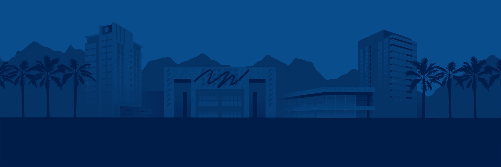
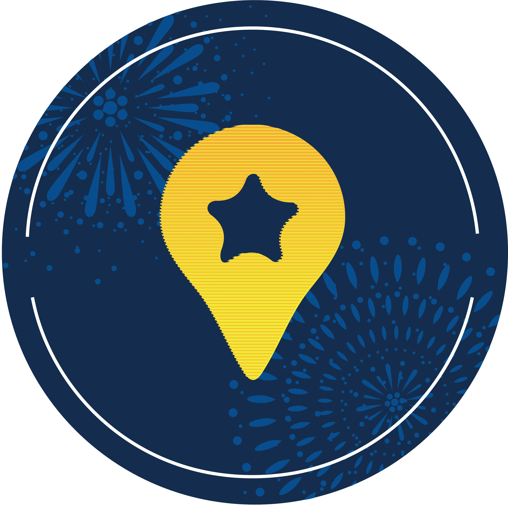
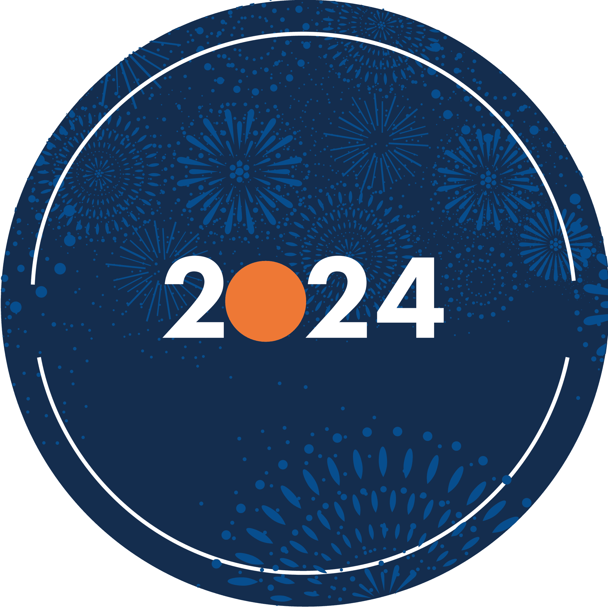
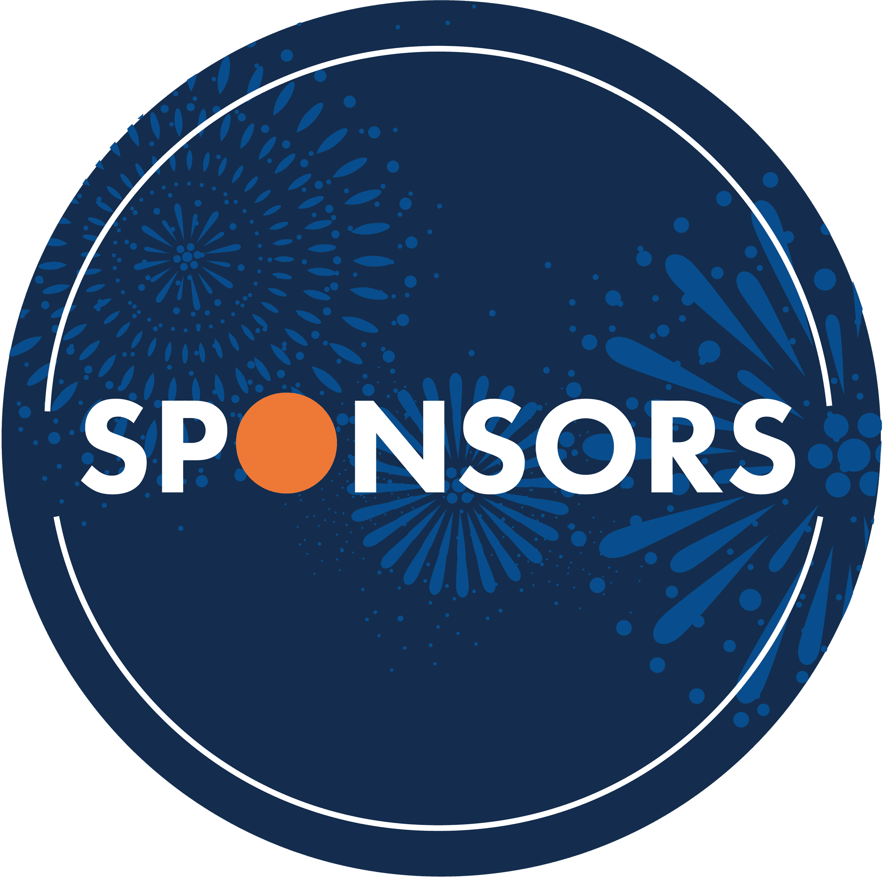
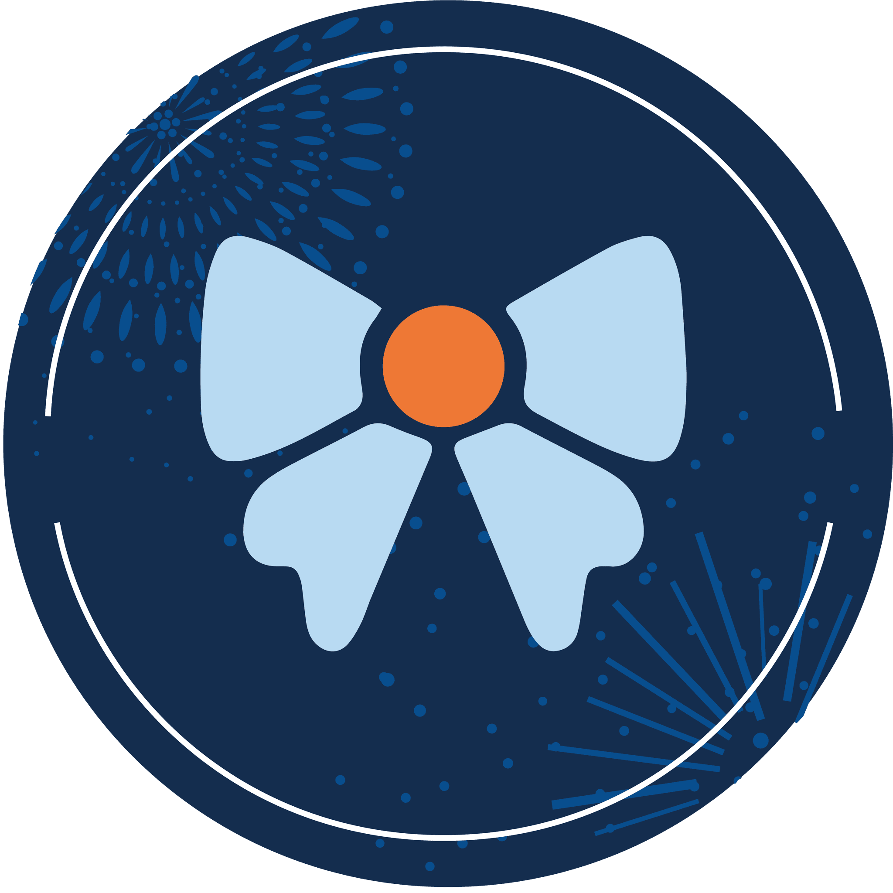
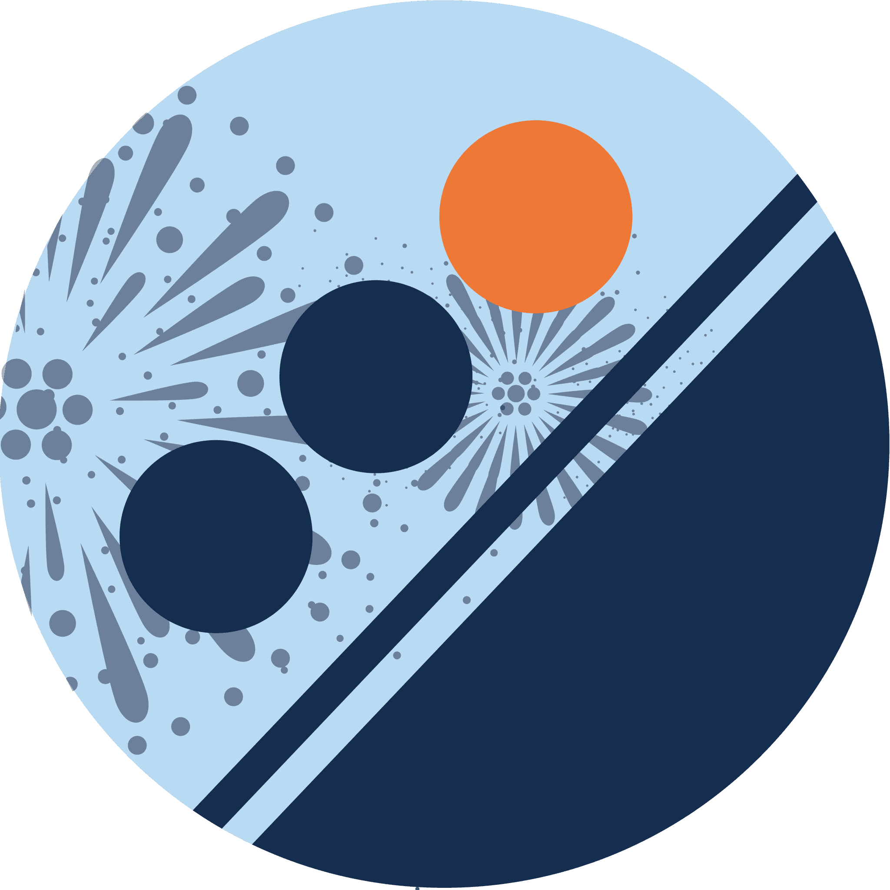
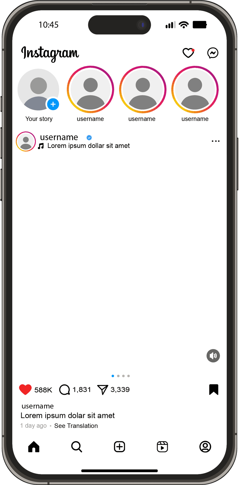

Fanime Con
Graphic Designer

- Role
- Graphic Designer
- Tools
- Adobe Photoshop, Illustrator, After Effects, Lightroom
Overview
FanimeCon is one of Northern California’s largest anime conventions. I designed quick-turnaround graphics for social media, schedules, and guest spotlights, adapting formats and maintaining brand consistency to keep attendees informed and engaged.
Goals
- Promote events and panels to maximize attendance
- Maintain consistent branding across all formats
- Produce and deliver assets quickly during the convention
Challenges
- Same-day requests and shifting schedules
- Mixed-quality photos and varied artwork sources
- Multiple output formats with different specifications
Solutions
- Built modular templates for rapid updates
- Established a type/color system with export presets
- Used Photoshop and Lightroom for quick image fixes, Illustrator for vector work, and After Effects for motion polish
Instagram story highlights
Instagram story bubbles created to show constant branding and uniqueness.





Social media designs
On the left presents a prototype of a possible Instagram design with Instagram stories I created. On the right is an engagement post for New Years.
Instagram stories
Instagram stories close up.
